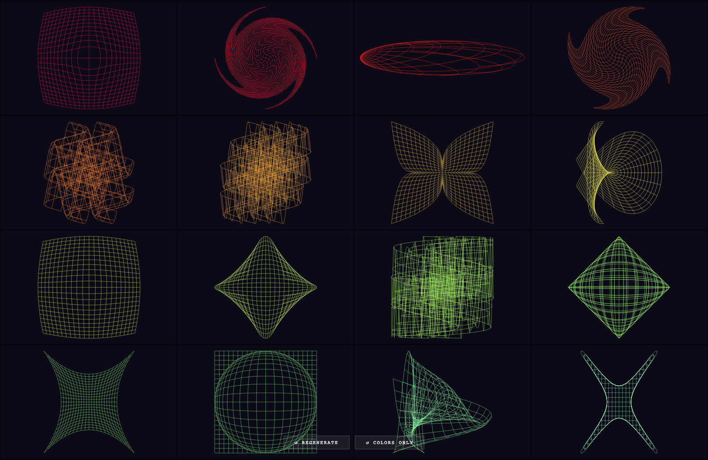

2026_exp/vis · v32
Custom Projections
2026_exp/vis/v32_custom_projections.html
Custom Projections — 2026_exp/vis; grouped under Fields / Contours / Noise. Signals: d3, fields-contours-noise, svg.
Upgrade notes: Already adjacent to insert37 logic; extend family review with palette-mode and glyph-overlay notes.